صفحه ۱۲۱
فعالیت
ویژگیهای قالب بندی متن را برای عناصر فایل test.html به کار بگیرید و نتیجه را در مرورگر مشاهده کنید.
طراحی ظاهر عناصر (رنگ ها، پس زمینهها، شفافیت و خط دور)
CSS دارای ویژگیهای مختلفی در زمینه تنظیم ظاهر عناصر است. این ویژگیها برای تعیین رنگ متن، رنگ زمینه، تصویر پسزمینه،کنترل تصویر پسزمینه، شفافیت و خط دور عناصر بهکار میروند. در ادامه به برخی از این ویژگیها اشاره میشود.
color و background-color: برای تعیین رنگ متن و زمینه عناصر بهکار میرود. برای هر دو ویژگی فوق میتوان از نام رنگ، کد هگزادسیمال رنگ یا کد RGB استفاده نمود.
مثال
در مثال روبهرو از هر سه روش تعیین مقدار رنگ استفاده شده است.
;color: blue
;background-color: #0000FF
;)0,0,255(background-color: rgb
opacity: شفافیت عناصر توسط این ویژگی تعیین میشود. مقدار opacity با عددی بین 0 و 1 تعیین میشود.
مقادیر پایین این ویژگی باعث کاهش شفافیت عنصر و مقادیر نزدیک 1 باعث افزایش شفافیت عنصر میشود.
background-image: برای تعیین تصویر پسزمینه بهکار میرود. برای مقداردهی به این ویژگی ابتدا عبارت url و سپس نام تصویر داخل پرانتز نوشته میشود.
مثال
مانند مثال روبهرو:
;)images/background.jpg/.(background-image:url
background-repeat: تصاویری که پهنای صفحه را پوشش ندهند، تکرار میشوند. برای تنظیم نحوه تکرار یا عدم تکرار تصویر از این ویژگی استفاده میشود که دارای مقادیر مختلفی مانند no-repeat، repeat-x،
repeat-y و ... است.
background-size: اندازه تصویر پس زمینه را تعیین میکند. این ویژگی مشخص میکند که تصویر پسزمینه با چه ابعادی داخل عنصر نمایش داده شود. برای پوشش پهنای صفحه، بدون تکرار تصویر، از این ویژگی با مقدار cover استفاده میشود.
background-position: برای تنظیم محل نمایش تصویر پسزمینه بهکار میرود و دارای مقادیر مختلفی مانند center، left، right، left top، right bottom و غیره است.
صفحه ۱۲۲
background-attachment: اگر تصویر زمینه بزرگتر از محدوده نمایش باشد، میتوان با اسکرول کردن، بخشهای پایینتر تصویر را به نمایش گذاشت. برای ثابت نگه داشتن تصویر در هنگام اسکرول صفحه، از این ویژگی با مقدار fixed استفاده میشود.
border: عناصر صفحه میتوانند همراه با یک خط دور نمایش داده شوند. ایجاد خط دور توسط ویژگی border صورت میگیرد. مقادیر این ویژگی به ترتیب ضخامت خط دور، نوع خط دور و رنگ آن را تعیین میکنند.
;border: 1px solid gray
border-radius: برای گرد شدن گوشهها از این ویژگی استفاده میشود و مقدار آن میتواند برحسب پیکسل یا درصد باشد:
;border-radius:10px
طراحی ظاهر عناصر (رنگها، پسزمینهها، شفافیت و خط دور)
کار کارگاهی
در فایل test.html کد HTML زیر را بنویسید و نتیجه را در مرورگر مشاهده کنید. سپس استایلها را بهصورت مرحله به مرحله اضافه کنید تا تأثیر هر یک را بر عناصر صفحه درک کنید.
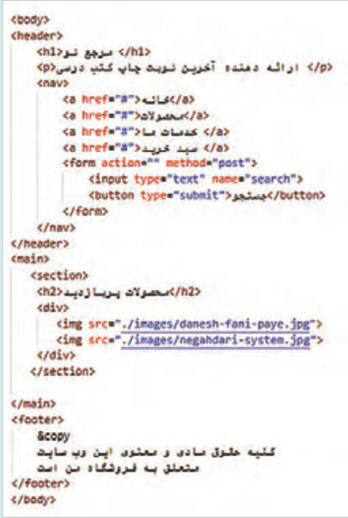
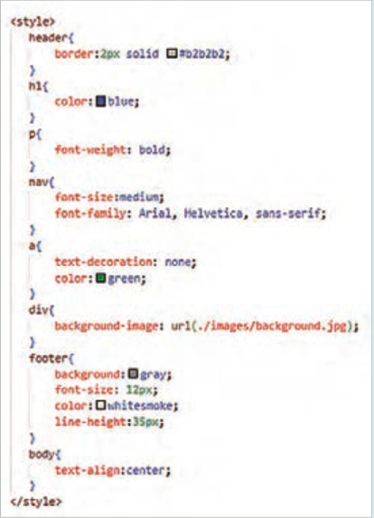
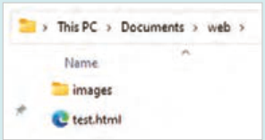
صفحه ۱۲۳
در نرمافزار Paint یک فایل جدید با نام background.jpg ایجاد کنید و آن را درون پوشه images در مسیر فایل test.html ذخیره کنید. ابعاد آن را 50×50 پیکسل تنظیم کنید. درون آن دو دایره توخالی با رنگ ملایم ایجاد کنید (مانند تصویر روبهرو) و فایل را ذخیره کنید. این تصویر به پس زمینه عنصر div اعمال میگردد.
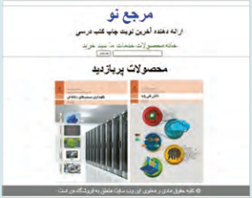
خروجی
انتخابگرهای CSS عنصر یا مجموعه عناصری که استایل CSS برای آنها نوشته میشود، انتخابگر نامیده میشوند. CSS دارای انواع مختلفی از انتخابگرها شامل انتخابگرهای ساده، ترکیبی، شبهکلاس، شبه عنصر و ویژگی است که در این بخش به آنها پرداخته میشود.
انتخابگرهای ساده (Simple):
این انتخابگرها از اسامی تگها، شناسهها، کلاسها و علامت * برای انتخاب عناصر استفاده میکنند. انواع انتخابگرهای ساده در جدول ٨ آمده است:
جدول ٨ انواع انتخابگرهای ساده
نوع انتخابگر
عملکرد
انتخاب عناصر صفحه بر اساس نام تگ، مانند h2، p، table، body و ...
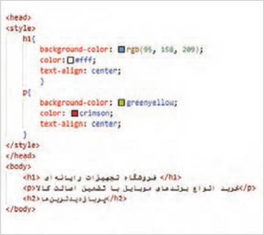
عنصر (Element)
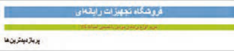
صفحه ۱۲۴
انتخاب عناصر صفحه براساس شناسه آنها: انتخابگرهای شناسه با علامت # شروع میشوند. این انتخابگرها عناصر را با استفاده از شناسه (id) آنها انتخاب میکنند. به عنوان مثال برای انتخاب عنصری با شناسه test از عبارت test# استفاده میشود. مقدار شناسه یک عنصر درون ویژگی id مشخص میشود. هر شناسه فقط مربوط به یک عنصر است و نباید برای سایر عناصر صفحه تکرار گردد. در مثال زیر انتخابگر test متعلق به عنصر <h2> است.
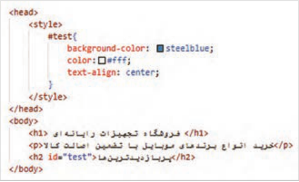
شناسه (Id)
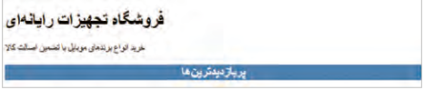
انتخاب عناصر صفحه براساس نام کلاس: انتخابگرهای کلاس با علامت . شروع میشوند. این انتخابگرها عناصر را با استفاده از نام کلاس (class) آنها انتخاب میکنند. ویژگی انتخابگر کلاس این است که میتواند مجموعهای از عناصر با نام کلاس یکسان را انتخاب نماید. بهطور مثال انتخابگر.class1 تمام عناصر صفحه با ویژگی "class="class1 را انتخاب میکند. در مثال زیر دو عنصر <h1> و <p> دارای نام کلاس یکسان هستند، پس رنگ متن هر دو آبی و اندازه فونت آنها 18 پیکسل میگردد.
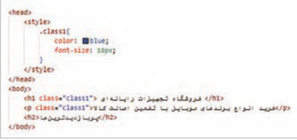
کلاس (Class)
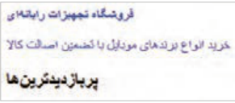
صفحه ۱۲۵
انتخاب گروهی از عناصر: انتخابگرهای گروهی مجموعهای از قوانین CSS را به چند عنصر اختصاص میدهند. در یک انتخابگر گروهی، نام عناصر به همراه کاما نوشته میشود. در مثال زیر عبارت h1, h2,p یک انتخابگر گروهی محسوب میشود.
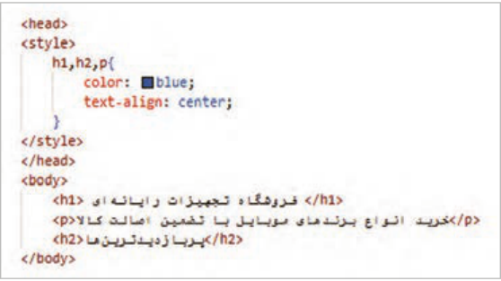
گروهی(Group)
قوانین بالا به تگهای <h2<، >h1> و <p> اعمال میشود. درنتیجه همۀ آنها، آبی و وسطچین میشوند.
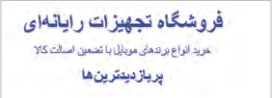
انتخاب تمام عناصر صفحه توسط علامت *:
در مثال زیر، مقدار حاشیه خارجی (margin) و فاصله داخلی (padding) در تمام عناصر صفحه برابر با صفر تنظیم شده است.
سراسری (universal)
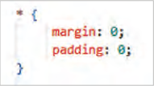
انتخابگر ترکیبی(Combinator):
انتخابگرهای ترکیبی در CSS برای تعریف رابطه ساختاری و موقعیتی میان دو یا چند انتخابگر بهکار میروند. مانند انتخابگر فرزند با نماد < و انتخابگر نوادگان با استفاده از فاصله، عناصری که بهصورت تودرتو نوشته میشوند، رابطه والد و فرزندی پیدا میکنند. بهعنوان مثال عنصر li فرزند عنصر ul است.
درنتیجه برای انتخاب عناصر li عبارت ul li یا ul > li استفاده میشود. استفاده از علامت < باعث میشود که محدودۀ تأثیرگذاری به فرزندان مستقیم یک عنصر کاهش یابد.
صفحه ۱۲۶
مثال
تصویر زیر مثالی را درباره بهکارگیری انتخابگر ترکیبی نمایش میدهد.
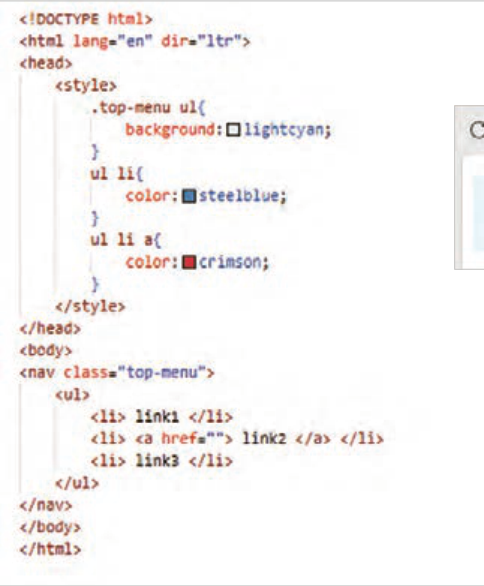
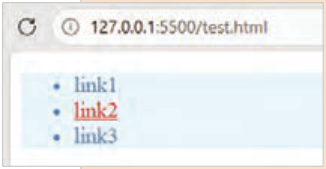
خروجی
انتخابگرهای شبهکلاس (Pseudo-class Selectors) انتخابگرهای شبهکلاس امکان تعیین استایل عناصر را براساس وضعیت، موقعیت یا ویژگیهای پویای آنها فراهم میکند. برخی از این انتخابگرها وابسته به عملکرد کاربر فعال میشوند. شبهکلاسها با علامت : بعد از نام عنصر نوشته میشوند. انتخابگرهای شبهکلاس به شرح زیر هستند:
hover: زمانی فعال میشود که کاربر اشارهگر ماوس خود را بر روی یک عنصر ببرد.
focus: این رویداد زمانی اتفاق میافتد که یک عنصر (معمولاً عناصر فرم) فعال شود و کار امکان تعامل با آن را داشته باشد.
active: زمانی فعال میشود که یک عنصر در حالت فعال قرار گیرد. مانند زمانی که کاربر روی یک دکمه کلیک میکند.
:nth-child() امکان انتخاب فرزندان یک عنصر را بر اساس موقعیت آنها فراهم میکند.
:frist-child () امکان انتخاب اولین فرزند یک عنصر را برای انتخاب اولین فرزند یک عنصر بهکار میرود.
:last-child() برای انتخاب آخرین فرزند یک عنصر بهکار میرود.
صفحه ۱۲۷
انتخابگر ویژگی (Attribute selector) انتخابگر ویژگی، انتخاب عناصر را بر اساس ویژگیهای آنها انجام میدهد. بهطور مثال برای انتخاب عناصر متنی فرم از انتخابگر ]"input[type="text و برای انتخاب عناصری که دارای ویژگی href باشند از انتخابگر [href] استفاده میشود.
کار با انواع انتخابگرهای CSS (طراحی منو)
کار کارگاهی
یک فایل با نام index.html ایجاد کنید و درون آن کدهای HTML زیر را بنویسید. فایل را ذخیره کنید و نتیجه را در مرورگر مشاهده کنید. سپس سبک عناصر را بهصورت تدریجی به بخش head اضافه کنید و نتیجه هر سبک را بررسی کنید.
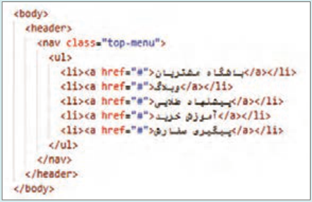
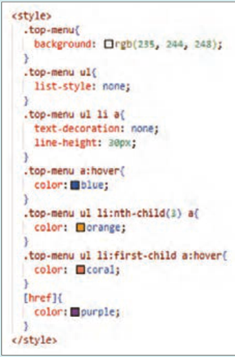
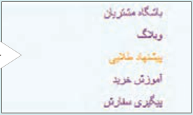
خروجی
فعالیت
1 در مقابل هر انتخابگر، نوع آن را بهصورت comment بنویسید. محتوای کامنت را درون علامت / / قرار دهید.
2 ویژگی list-style با مقدار none چه نتیجهای دارد؟